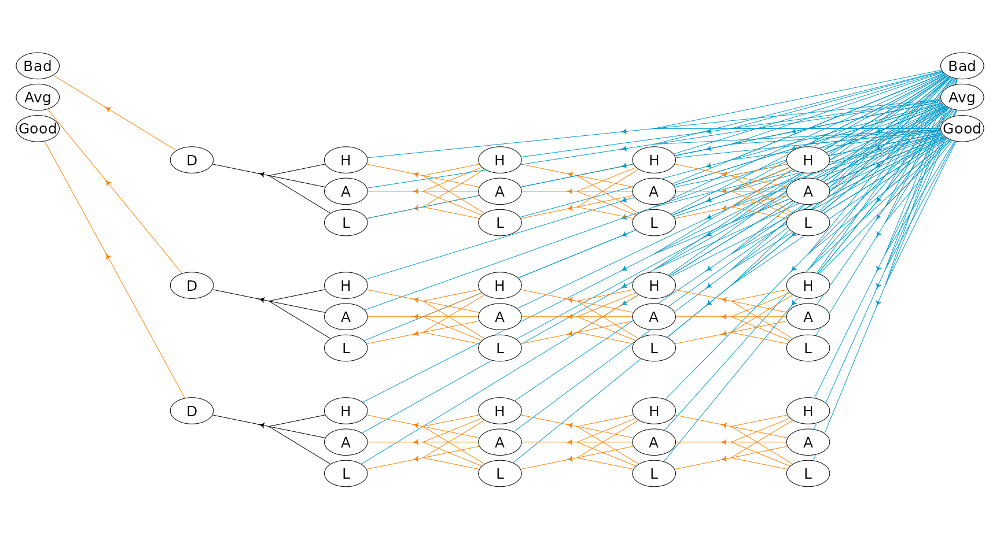

Building an MDP model
Lars Relund lars@relund.dk
2023-01-27
Source:vignettes/building.Rmd
building.RmdBuilding and solving an MDP is done in two steps. First, the MDP is built and saved in a set of binary files. Next, you load the MDP into memory from the binary files and apply various algorithms to the model.
In this vignette we focus on the first step, i.e. building and saving the model to a set of binary files.
An infinite semi-MDP
An infinite-horizon semi-MDP considers a sequential decision problem over an infinite number of stages. Let \(I\) denote the finite set of system states at stage \(n\). Note we assume that the semi-MDP is homogeneous, i.e the state space is independent of stage number. When state \(i \in I\) is observed, an action \(a\) from the finite set of allowable actions \(A(i)\) must be chosen which generates reward \(r(i,a)\). Moreover, let \(\tau(i,a)\) denote the stage length of action \(a\), i.e. the expected time until the next decision epoch (stage \(n+1\)) given action \(a\) and state \(i\). Finally, let \(p_{ij}(a)\) denote the transition probability of obtaining state \(j\in I\) at stage \(n+1\) given that action \(a\) is chosen in state \(i\) at stage \(n\). A policy is a decision rule/function that assigns to each state in the process an action. Note if the stage length is the same for all states and actions the we have a regular infinite-horizon MDP.
Let us consider Example 6.1.1 in Tijms (2003). At the beginning of each day a piece of equipment is inspected to reveal its actual working condition. The equipment will be found in one of the working conditions \(i = 1,\ldots, N\) where the working condition \(i\) is better than the working condition \(i+1\). The equipment deteriorates in time. If the present working condition is \(i\) and no repair is done, then at the beginning of the next day the equipment has working condition \(j\) with probability \(q_{ij}\). It is assumed that \(q_{ij}=0\) for \(j<i\) and \(\sum_{j\geq i}q_{ij}=1\). The working condition \(i=N\) represents a malfunction that requires an enforced repair taking two days. For the intermediate states \(i\) with \(1<i<N\) there is a choice between preventively repairing the equipment and letting the equipment operate for the present day. A preventive repair takes only one day. A repaired system has the working condition \(i=1\). The cost of an enforced repair upon failure is \(C_{f}\) and the cost of a preemptive repair in working condition \(i\) is \(C_{p}(i)\). We wish to determine a maintenance rule which minimizes the long-run average repair cost per day.
To formulate this problem as an infinite horizon semi-MDP the set of possible states of the system is chosen as \[ I=\{1,2,\ldots,N\}. \] State \(i\) corresponds to the situation in which an inspection reveals working condition \(i\). Define actions \[ a=\left\{\begin{array}{ll} nr & \text{if no repair.}\\ pr & \text{if preventive repair.}\\ fr & \text{if forced repair.}\\ \end{array}\right. \] The set of possible actions in state \(i\) is chosen as \(A(1)=\{nr\},\ A(i)=\{nr,pr\}\) for \(1<i<N, A(N)=\{fr\}\). The one-step transition probabilities \(p_{ij}(a)\) are given by \(p_{ij}(0) = q_{ij}\) for \(1\leq i<N\), \(p_{i1}(1) = 1\) for \(1<i<N\), \(p_{N1}(2)=1\) and zero otherwise. The one-step costs \(c_{i}(a)\) are given by \(c_{i}(0)=0,\ c_{i}(1)=C_{p}(i)\) and \(c_{N}(2)=C_{f}\). The stage length until next decision epoch are \(\tau(i,a) = 1, 0\leq i < N\) and \(\tau(N,a) = 2\).
Assume that the number of possible working conditions equals \(N=5\), i.e. the number of states are:
#> # A tibble: 5 × 2
#> idx label
#> <dbl> <chr>
#> 1 0 i = 1
#> 2 1 i = 2
#> 3 2 i = 3
#> 4 3 i = 4
#> 5 4 i = 5Note each state are given an index and are always numbered from zero. The repair costs (negative numbers since the MDP optimize based on rewards) are:
Cf <- -10
Cp <- c(0, -7, -7, -5)The deterioration probabilities \(q_{ij}\) are
Q <- matrix(c(
0.90, 0.10, 0, 0, 0,
0, 0.80, 0.10, 0.05, 0.05,
0, 0, 0.70, 0.10, 0.20,
0, 0, 0, 0.50, 0.50),
nrow=4, byrow=T) To build the model we need transition probabilities and the state index for the corresponding transitions. We may define function:
#' Transition probabilities
#' @param i State (1 <= i <= N).
#' @param a Action (`nr`, `pr` or `fr`).
#' @return A list with non-zero transition probabilities and state index of the transitions.
transPr <- function(i, a) {
pr <- NULL
idx <- NULL
if (a == "nr") {
pr <- Q[i, ]
idx <- which(pr > 0) # only consider trans pr > 0
pr <- pr[idx]
idx <- idx - 1 # since state index is state-1
}
if (a == "pr" | a == "fr") {
pr <- 1
idx <- 0
}
return(list(pr = pr, idx = idx))
}The transition probabilities for state 1 and the “no repair” action is now:
transPr(1, "nr") #> $pr
#> [1] 0.9 0.1
#>
#> $idx
#> [1] 0 1That is, 90% for a transition to the state with index 0 (\(i = 0\)) and 10% for a transition to the state with index 1 (\(i = 2\)). Note we always assume that the states at the next stage is numbered using an index starting from zero!
The state-expanded hypergraph representing the semi-MDP with infinite time-horizon is shown in Figure 1. Here the first stage is visualized. Each node corresponds to a specific state in the MDP. A directed hyperarc is defined for each possible action. For instance, the state/node corresponding to working condition \(i=2\) and the two hyperarcs with head in this node corresponds to the two possible actions preventive and no repair. Note the tails of a hyperarc represent a possible transition (\(p_{ij}(a)>0\)).
Figure 1: The state-expanded hypergraph for the semi-MDP.
To build the semi-MDP, we use the binaryMDPWriter where
the model can be built using either matrices or an hierarchical
structure. We first illustrate how to use the hierarchical
structure.
labels <- states$label
w<-binaryMDPWriter("hct611-1_") # use prefix hct611-1_ to the files
w$setWeights(c("Duration", "Net reward"))
w$process() # founder process
w$stage() # a stage with states
w$state(label = labels[1]) # state 1
lst <- transPr(1, "nr")
w$action(label = "nr", weights = c(1, 0), pr = lst$pr, id = lst$id, end = TRUE)
w$endState() # end state 1
for (i in 2:(N-1)) { # states 2 to N-1
w$state(label = labels[i])
lst <- transPr(i, "nr")
w$action(label = "nr", weights = c(1, 0), pr = lst$pr, id = lst$id, end = TRUE)
lst<-transPr(i, "pr")
w$action(label = "pr", weights = c(1, Cp[i]), pr = lst$pr, id = lst$id, end = TRUE)
w$endState()
}
w$state(label = labels[N])
lst<-transPr(N, "fr")
w$action(label = "fr", weights = c(2, Cf), pr = lst$pr, id = lst$id, end = TRUE)
w$endState()
w$endStage() # end stage
w$endProcess() # end process
w$closeWriter() # close the binary files#>
#> Statistics:
#> states : 5
#> actions: 8
#> weights: 2
#>
#> Closing binary MDP writer.Observe that
- We build the model with two weights applied to each action “Duration” and “Net reward”. That is, when we specify an action, we must add two weights. “Duration” equals 1 day except in state \(i=N\) where a forced repair takes 2 days.
- The process is built using first a
processwhich contains astage(we only specify one stage, since we have a homogeneous semi-MDP over an infinite horizon) which containsstates which containsactions. - Transitions of an
actionare specified using theprandidparameter. - The
end = TRUEargument in an action specify that the action is a normal action that not define a sub-process. - The model is saved in a set of binary files with prefix
hct611-1_.
Building the model may be error prone and you may use
getBinInfoStates() and getBinInfoActions() to
retrieve info about the content of the binary files:
getBinInfoStates("hct611-1_")#> # A tibble: 5 × 3
#> sId stageStr label
#> <dbl> <chr> <chr>
#> 1 0 0,0 i = 1
#> 2 1 0,1 i = 2
#> 3 2 0,2 i = 3
#> 4 3 0,3 i = 4
#> 5 4 0,4 i = 5
getBinInfoActions("hct611-1_")#> # A tibble: 8 × 8
#> aId sId scope index pr Duration `Net reward` label
#> <dbl> <int> <chr> <chr> <chr> <dbl> <dbl> <chr>
#> 1 0 0 1,1 0,1 0.9,0.1 1 0 nr
#> 2 1 1 1,1,1,1 1,2,3,4 0.8,0.1,0.05,0.05 1 0 nr
#> 3 2 1 1 0 1 1 -7 pr
#> 4 3 2 1,1,1 2,3,4 0.7,0.1,0.2 1 0 nr
#> 5 4 2 1 0 1 1 -7 pr
#> 6 5 3 1,1 3,4 0.5,0.5 1 0 nr
#> 7 6 3 1 0 1 1 -5 pr
#> 8 7 4 1 0 1 2 -10 frThe model can be loaded using the loadMDP()
function.
The model can also be built by specifying a set of matrices. Note this way of specifying only work for infinite-horizon semi-MDPs (and not finite-horizon or hierarchical models). Specify a list of probability matrices (one for each action) where each row/state contains the transition probabilities (all zero if the action is not used in a state), a matrix with rewards and a matrix with stage lengths (row = state, column = action).
## Define probability matrices
P <- list()
# a = nr (no repair)
P[[1]] <- as.matrix(rbind(Q, 0))
# a = pr (preventive repair)
Z <- matrix(0, nrow = N, ncol = N)
Z[2, 1] <- Z[3, 1] <- Z[4, 1] <- 1
P[[2]] <- Z
# a = fr (forced repair)
Z <- matrix(0, nrow = N, ncol = N)
Z[5, 1] <- 1
P[[3]] <- Z
## Rewards, a 5x3 matrix with one column for each action
R <- matrix(0, nrow = N, ncol = 3)
R[2:4, 2] <- Cp[2:4]
R[5, 3] <- Cf
## State lengths, a 5x3 matrix with one column for each action
D <- matrix(1, nrow = N, ncol = 3)
D[5, 3] <- 2
## Build model using the matrix specification
w <- binaryMDPWriter("hct611-2_")
w$setWeights(c("Duration", "Net reward"))
w$process(P, R, D)
w$closeWriter()#>
#> Statistics:
#> states : 5
#> actions: 8
#> weights: 2
#>
#> Closing binary MDP writer.A finite-horizon semi-MDP
A finite-horizon semi-MDP considers a sequential decision problem over \(N\) stages. Let \(I_{n}\) denote the finite set of system states at stage \(n\). When state \(i \in I_{n}\) is observed, an action \(a\) from the finite set of allowable actions \(A_n(i)\) must be chosen, and this decision generates reward \(r_{n}(i,a)\). Moreover, let \(\tau_n(i,a)\) denote the stage length of action \(a\), i.e. the expected time until the next decision epoch (stage \(n+1\)) given action \(a\) and state \(i\). Finally, let \(p_{ij}(a,n)\) denote the transition probability of obtaining state \(j\in I_{n+1}\) at stage \(n+1\) given that action \(a\) is chosen in state \(i\) at stage \(n\).
Consider a small machine repair problem used as an example in Nielsen and Kristensen (2006) where the machine is always replaced after 4 years. The state of the machine may be: good, average, and not working. Given the machine’s state we may maintain the machine. In this case the machine’s state will be good at the next decision epoch. Otherwise, the machine’s state will not be better at next decision epoch. When the machine is bought it may be either in state good or average. Moreover, if the machine is not working it must be replaced.
The problem of when to replace the machine can be modeled using a
Markov decision process with \(N=5\)
decision epochs. We use system states good,
average, not working and dummy state
replaced together with actions buy (buy),
maintain (mt), no maintenance (nmt), and
replace (rep). The set of states at stage zero \(S_{0}\) contains a single dummy state
dummy representing the machine before knowing its initial
state. The only possible action is buy.
The cost of buying the machine is 100 with transition probability of
0.7 to state good and 0.3 to state average.
The reward (scrap value) of replacing a machine is 30, 10, and 5 in
state good, average and
not working, respectively. The reward of the machine given
action mt are 55, 40, and 30 in state good,
average and not working, respectively.
Moreover, the system enters state 0 with probability 1 at the next
stage. Finally, the reward, transition states and probabilities given
action \(a=\)nmt are given
by:
| \(n:s\) |
\(1:\)
good
|
\(1:\)
average
|
\(2:\)
good
|
\(2:\)
average
|
\(3:\)
good
|
\(3:\)
average
|
|---|---|---|---|---|---|---|
| \(r_n(i,a)\) | 70 | 50 | 70 | 50 | 70 | 50 |
| \(j\) | \(\{0,1\}\) | \(\{1,2\}\) | \(\{0,1\}\) | \(\{1,2\}\) | \(\{0,1\}\) | \(\{1,2\}\) |
| \(p_{ij}(a,n)\) | \(\{0.6,0.4\}\) | \(\{0.6,0.4\}\) | \(\{0.5,0.5\}\) | \(\{0.5,0.5\}\) | \(\{0.2,0.8\}\) | \(\{0.2,0.8\}\) |
We build the MDP (all actions have same length) using the
binaryMDPWriter() function:
prefix<-"machine1_"
w <- binaryMDPWriter(prefix)
w$setWeights(c("Net reward"))
w$process()
w$stage() # stage n=0
w$state(label="dummy")
w$action(label="buy", weights=-100, pr=c(0.7,0.3), id=c(0,1), end=TRUE)
w$endState()
w$endStage()
w$stage() # stage n=1
w$state(label="good")
w$action(label="mt", weights=55, pr=1, id=0, end=TRUE)
w$action(label="nmt", weights=70, pr=c(0.6,0.4), id=c(0,1), end=TRUE)
w$endState()
w$state(label="average")
w$action(label="mt", weights=40, pr=1, id=0, end=TRUE)
w$action(label="nmt", weights=50, pr=c(0.6,0.4), id=c(1,2), end=TRUE)
w$endState()
w$endStage()
w$stage() # stage n=2
w$state(label="good")
w$action(label="mt", weights=55, pr=1, id=0, end=TRUE)
w$action(label="nmt", weights=70, pr=c(0.5,0.5), id=c(0,1), end=TRUE)
w$endState()
w$state(label="average")
w$action(label="mt", weights=40, pr=1, id=0, end=TRUE)
w$action(label="nmt", weights=50, pr=c(0.5,0.5), id=c(1,2), end=TRUE)
w$endState()
w$state(label="not working")
w$action(label="mt", weights=30, pr=1, id=0, end=TRUE)
w$action(label="rep", weights=5, pr=1, id=3, end=TRUE)
w$endState()
w$endStage()
w$stage() # stage n=3
w$state(label="good")
w$action(label="mt", weights=55, pr=1, id=0, end=TRUE)
w$action(label="nmt", weights=70, pr=c(0.2,0.8), id=c(0,1), end=TRUE)
w$endState()
w$state(label="average")
w$action(label="mt", weights=40, pr=1, id=0, end=TRUE)
w$action(label="nmt", weights=50, pr=c(0.2,0.8), id=c(1,2), end=TRUE)
w$endState()
w$state(label="not working")
w$action(label="mt", weights=30, pr=1, id=0, end=TRUE)
w$action(label="rep", weights=5, pr=1, id=3, end=TRUE)
w$endState()
w$state(label="replaced")
w$action(label="dummy", weights=0, pr=1, id=3, end=TRUE)
w$endState()
w$endStage()
w$stage() # stage n=4
w$state(label="good", end=TRUE)
w$state(label="average", end=TRUE)
w$state(label="not working", end=TRUE)
w$state(label="replaced", end=TRUE)
w$endStage()
w$endProcess()
w$closeWriter()#>
#> Statistics:
#> states : 14
#> actions: 18
#> weights: 1
#>
#> Closing binary MDP writer.Note that at each stage the states are numbered using index starting
from zero such that e.g.
w$action(label="nmt", weights=50, pr=c(0.2,0.8), id=c(1,2), end=TRUE)
define an action with transition to states with indices 1 and 2 at the
next stage with probability 0.2 and 0.8, respectively.
The MDP is illustrated in Figure 2. Each node corresponds to a
specific state. Node text are the state index (given stage) and its
label. A directed hyperarc is defined for each possible action. For
instance, action mt (maintain) corresponds to a
deterministic transition to state good and action
nmt (not maintain) corresponds to a transition to a
condition/state not better than the current condition/state. We buy the
machine in stage 1 and may choose to replace the machine during its
lifetime.
Figure 2: A finite-horizon MDP
An infinite-horizon HMDP
A hierarchical MDP is an MDP with parameters defined in a special
way, but nevertheless in accordance with all usual rules and conditions
relating to such processes (Kristensen and
Jørgensen (2000)). The basic idea of the hierarchical structure
is that stages of the process can be expanded to a so-called child
process, which again may expand stages further to new child
processes leading to multiple levels. To illustrate consider the HMDP
shown in Figure 3. The process has three levels. At Level 2
we have a set of finite-horizon semi-MDPs (one for each oval box) which
all can be represented using a state-expanded hypergraph (hyperarcs not
shown, only hyperarcs connecting processes are shown). A semi-MDP at
Level 2 is uniquely defined by a given state \(s\) and action \(a\) of its parent process at
Level 1 (illustrated by the arcs with head and tail node at
Level 1 and Level 2, respectively). Moreover,
when a child process at Level 2 terminates a transition
from a state \(s\in \mathcal{S}_{N}\)
of the child process to a state at the next stage of the parent process
occur (illustrated by the (hyper)arcs having head and tail at
Level 2 and Level 1, respectively).

Figure 3: The state-expanded hypergraph of the first stage of a hierarchical MDP. Level 0 indicate the founder level, and the nodes indicates states at the different levels. A child process (oval box) is represented using its state-expanded hypergraph (hyperarcs not shown) and is uniquely defined by a given state and action of its parent process.
Since a child process is always defined by a stage, state and action of the parent process we have that for instance a state at Level 1 can be identified using an index vector \(\nu=(n_{0},s_{0},a_{0},n_{1},s_{1})\) where \(s_1\) is the state id at the given stage \(n_1\) in the process defined by the action \(a_0\) in state \(s_0\) at stage \(n_0\). Note all values are ids starting from zero, e.g. if \(s_1=0\) it is the first state at the corresponding stage and if \(a_0=2\) it is the third action at the corresponding state. In general a state \(s\) and action \(a\) at level \(l\) can be uniquely identified using \[ \begin{aligned} \nu_{s}&=(n_{0},s_{0},a_{0},n_{1},s_{1},\ldots,n_{l},s_{l}) \\ \nu_{a}&=(n_{0},s_{0},a_{0},n_{1},s_{1},\ldots,n_{l},s_{l},a_{l}). \end{aligned} \] The index vectors for state \(v_0\), \(v_1\) and \(v_2\) are illustrated in Figure 3.
Let us try to solve a small problem from livestock farming, namely the cow replacement problem where we want to represent the age of the cow, i.e. the lactation number of the cow. During a lactation a cow may have a high, average or low yield. We assume that a cow is always replaced after 4 lactations.
In addition to lactation and milk yield we also want to take the genetic merit into account which is either bad, average or good. When a cow is replaced we assume that the probability of a bad, average or good heifer is the same.
We formulate the problem as a HMDP with 2 levels. At level 0 the
states are the genetic merit and the length of a stage is a life of a
cow. At level 1 a stage describe a lactation and states describe the
yield. Decisions at level 1 are keep or
replace.
Note the MDP runs over an infinite time-horizon at the founder level where each state (genetic merit) define a semi-MDP at level 1 with 4 lactations.
To generate the MDP we need to know the weights and transition probabilities which are provided in a CSV file. To ease the understanding we provide 2 functions for reading from the CSV:
#> Rows: 66 Columns: 16
#> ── Column specification ──────────────────────────────────────────────────────────────────
#> Delimiter: ","
#> chr (1): label
#> dbl (15): s0, n1, s1, Duration, Reward, Output, scp0, idx0, pr0, scp1, idx1, pr1, scp2...
#>
#> ℹ Use `spec()` to retrieve the full column specification for this data.
#> ℹ Specify the column types or set `show_col_types = FALSE` to quiet this message.
cowDf#> # A tibble: 66 × 16
#> s0 n1 s1 label Durat…¹ Reward Output scp0 idx0 pr0 scp1 idx1 pr1 scp2
#> <dbl> <dbl> <dbl> <chr> <dbl> <dbl> <dbl> <dbl> <dbl> <dbl> <dbl> <dbl> <dbl> <dbl>
#> 1 0 0 0 Dummy 0 0 0 1 0 0.333 1 1 0.333 1
#> 2 0 1 0 Keep 1 6000 3000 1 0 0.6 1 1 0.3 1
#> 3 0 1 0 Repl… 1 5000 3000 0 0 0.333 0 1 0.333 0
#> 4 0 1 1 Keep 1 8000 4000 1 0 0.2 1 1 0.6 1
#> 5 0 1 1 Repl… 1 7000 4000 0 0 0.333 0 1 0.333 0
#> 6 0 1 2 Keep 1 10000 5000 1 0 0.1 1 1 0.3 1
#> 7 0 1 2 Repl… 1 9000 5000 0 0 0.333 0 1 0.333 0
#> 8 0 2 0 Keep 1 8000 4000 1 0 0.6 1 1 0.3 1
#> 9 0 2 0 Repl… 1 7000 4000 0 0 0.333 0 1 0.333 0
#> 10 0 2 1 Keep 1 10000 5000 1 0 0.2 1 1 0.6 1
#> # … with 56 more rows, 2 more variables: idx2 <dbl>, pr2 <dbl>, and abbreviated variable
#> # name ¹Duration
# Weights given a state at level 2
lev1W <- function(s0Idx, n1Idx, s1Idx, a1Lbl) {
return(cowDf %>%
dplyr::filter(s0 == s0Idx & n1 == n1Idx & s1 == s1Idx & label == a1Lbl) %>%
dplyr::select(Duration, Reward, Output) %>% as.numeric()
)
}
lev1W(2, 2, 1, 'Keep') # good genetic merit, lactation 2, avg yield, keep action#> [1] 1 14000 7000
# Trans pr given a state at level 2
lev1Pr <- function(s0Idx, n1Idx, s1Idx, a1Lbl) {
return(cowDf %>%
dplyr::filter(s0 == s0Idx & n1 == n1Idx & s1 == s1Idx & label == a1Lbl) %>%
dplyr::select(scp0:last_col()) %>% as.numeric()
)
}
lev1Pr(2, 2, 1, 'Replace') # good genetic merit, lactation 2, avg yield, replace action#> [1] 0.0000000 0.0000000 0.3333333 0.0000000 1.0000000 0.3333333 0.0000000 2.0000000
#> [9] 0.3333333We can now generate the model with three weights
lblS0 <- c('Bad genetic level', 'Avg genetic level', 'Good genetic level')
lblS1 <- c('Low yield', 'Avg yield', 'High yield')
prefix<-"cow_"
w<-binaryMDPWriter(prefix)
w$setWeights(c("Duration", "Net reward", "Yield"))
w$process()
w$stage() # stage 0 at founder level
for (s0 in 0:2) {
w$state(label=lblS0[s0+1]) # state at founder
w$action(label="Keep", weights=c(0,0,0), prob=c(2,0,1)) # action at founder
w$process()
w$stage() # dummy stage at level 1
w$state(label="Dummy")
w$action(label="Dummy", weights=c(0,0,0),
prob=c(1,0,1/3, 1,1,1/3, 1,2,1/3), end=TRUE)
w$endState()
w$endStage()
for (d1 in 1:4) {
w$stage() # stage at level 1
for (s1 in 0:2) {
w$state(label=lblS1[s1+1])
if (d1!=4) {
w$action(label="Keep", weights=lev1W(s0,d1,s1,"Keep"),
prob=lev1Pr(s0,d1,s1,"Keep"), end=TRUE)
}
w$action(label="Replace", weights=lev1W(s0,d1,s1,"Replace"),
prob=lev1Pr(s0,d1,s1,"Replace"), end=TRUE)
w$endState()
}
w$endStage()
}
w$endProcess()
w$endAction()
w$endState()
}
w$endStage()
w$endProcess()
w$closeWriter()#>
#> Statistics:
#> states : 42
#> actions: 69
#> weights: 3
#>
#> Closing binary MDP writer.Note that the model is built using the prob parameter
which contains triples of (scope, id, pr). Scope can be: 2
= a transition to a child process (stage zero in the child process), 1 =
a transition to next stage in the current process and 0 = a transition
to the next stage in the father process. For instance if
prob = c(1,2,0.3, 0,0,0.7) we specify transitions to the
third state (id = 2) at the next stage of the process and to the first
state (id = 0) at the next stage of the father process with
probabilities 0.3 and 0.7, respectively.
A plot of the state-expanded hypergraph is given below where action
keep is drawn with orange color and action
replace with blue color.
